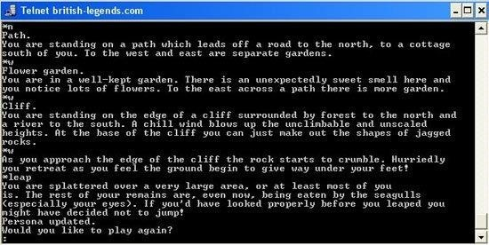
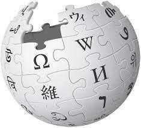

Evolution of the Internet
As explained before the early predecessor of the internet was the ARPNET which relied on a central information system,
which was the main thing that changed with the internet.
With the idea of a decentralized information source the development of the internet began.
It was through the creation of TCP/IP that this goal was achieved, a decentralized web of information,
and the internet was born. Since that year, 1983, a lot of advancements have been made to the internet.
- 1975: The email client
-
In 1975, John Vittal, a programmer at the University of Southern California, created the first
modern email program in response to the growing popularity of emailing. The addition of
"Reply" and "Forward" capability was the program's (named MSG's) largest technological
advancement.
- 1977: The PC modem
-
The Internet as we know it now made significant advancements in 1977. It was the year that
Dennis Hayes and Dale Heatherington unveiled and first sold to computer hobbyists the first
PC modem.
- 1978: The Bulletin Board System (BBS)
-
The first bulletin board system (BBS) was developed during a blizzard in Chicago in 1978
- 1978: Spam is born
-
Gary Thuerk delivered the first unsolicited commercial email message (later referred to as
spam) to 600 California Arpanet customers in 1978.
- 1979: MUD – The earliest form of multiplayer games
-

MultiUser Dungeon, also known as MUD, was the forerunner to World of Warcraft and
Second Life when it was created in 1979. Role-playing games, interactive storytelling, and
online chat were all combined in the text-only virtual worlds known as MUDs
- 1979: Usenet
-
Usenet, developed by two graduate students, entered the picture in 1979 as well. Usenet
was a discussion platform based on the internet that enabled users from all over the world
to communicate by publishing open messages that were grouped by newsgroups
- 1980: ENQUIRE software
-
Tim Berners-Lee's hypertext tool ENQUIRE, developed by the European Organization for
Nuclear Research (CERN), was made available so that researchers at the particle physics
facility could keep track of individuals, programs, and projects using hypertext (hyperlinks).
- 1987: The Internet grows
-
Nearly 30,000 hosts were active on the Internet in 1987. The TCP/IP standard makes it
possible to connect to more hosts than the 1,000 allowed by the original Arpanet protocol.
- 1989: The proposal for the World Wide Web
- n 1989, Tim Berners-Lee also proposed the idea for the World Wide Web. It was first
delivered in the March issue of MacWorld before being reissued in May 1990. It was created
to convince CERN that having a worldwide hypertext system would be in its best interests.
The term "World Wide Web" was first used in 1990, while Berners-Lee was writing the code
for what was initially known as "Mesh."
- 1998: Google!
-
Google went live in 1998, revolutionizing the way in which people find information online
- 2001: Wikipedia is launched
-

Wikipedia was one of the websites that helped create social media and collective web
content when it began in 2001, still in the midst of the dotcom crash
- 2004: “The” Facebook opens to college students
-
When Facebook first began in 2004, it was solely accessible to college students and went by
the moniker "The Facebook." Later, the "The" was omitted from the name
- 2006: Twitter gets twittering
-
Twitter was introduced in 2006. The original plan was to call it twittr (after Flickr), and the
first tweet said, "Just setting up my twttr."
- 2007: Major move to place TV shows online
- Hulu was first introduced in 2007 as a collaborative venture with ABC, NBC, and Fox to
provide popular TV shows for online viewing
- 2010: Instagram captures a new audience
- The number of platforms on the Internet has increased as social media usage grows.
Instagram, a photo-sharing website, first appeared on the scene in 2010.
- 2021: The rise of NFTs
- In 2021, Non-Fungible Tokens (NFTs) gained popularity as a means of exchanging money for
digital goods and art.
- 2022: ChatGPT launches
- ChatGPT was formally introduced in 2022. People can create messages, gather data, and
more with the aid of an artificial intelligence (AI) platform